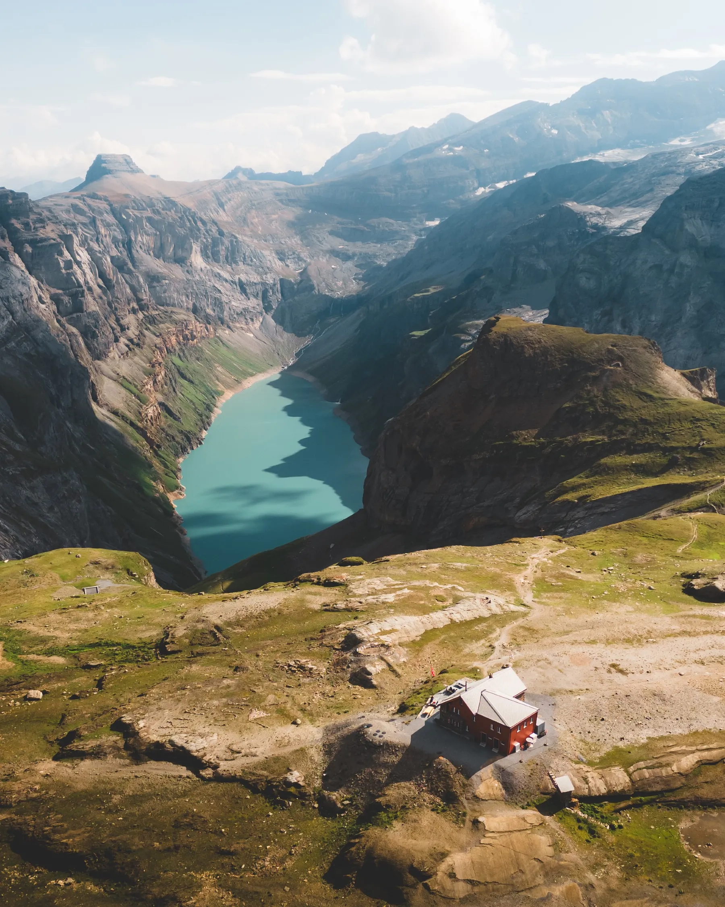

Photo · zimydakidSLEEP ABOVE THE TURQUOISE
A mountain hut just above Limmernsee. Overnight here and you get both sunset and sunrise from the ridge.
Same approach as Limmernsee. Cable car, tunnel, then climb. Book the hut in advance (muttseehuette.ch, or call). It fills up fast in peak season.
Dinner at the hut, drinks on the terrace while the light goes. Cloudy conditions are actually stronger than blue skies here. Moodier water colour, better mountain mood.